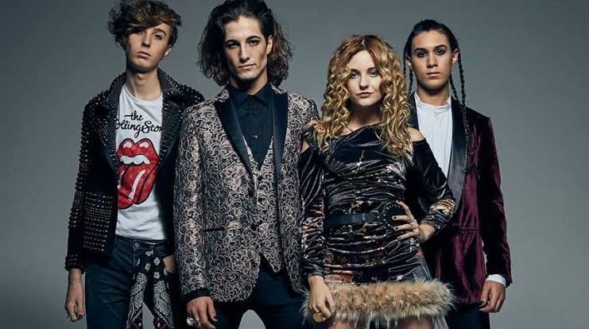
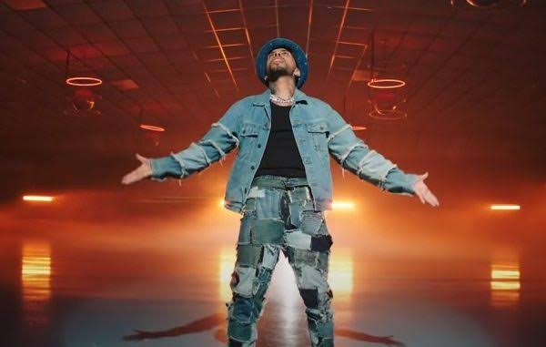
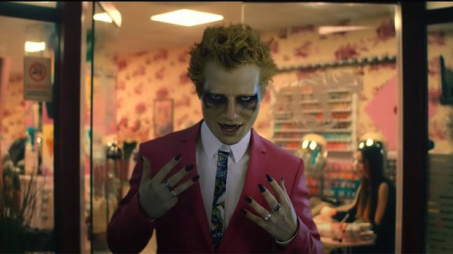

La banda italiana Måneskin se ha convertido en uno de los grandes fenómenos musicales de este 2021 en todo el mundo. Desde que para sorpresa de todxs se proclamasen ganadores de la última edición del Festival de Eurovisión con su tema Zitti e buoni, la banda de rock que lidera el cantante Damiano David ha seguido muy presente en nuestras vidas de diferentes formas.


Todo esto se produce en medio de la etapa final del embarazo de la dominicana, como producto de su unión con el manager Raphy Pina, lo que nos llevó también a interesarnos en el estado en que se encuentra, el nombre que piensa ponerle a su hija (porque será mujer) y el modo en que se ha enfrentado a su situación de gravidez en medio de la pandemia.

El puertorriqueño ha presentado Todo De Ti, su nuevo e impactante sencillo. No solo nos referimos a su cambio de imagen, sino a los ritmos que protagonizan este tema. En él escuchamos una fusión de sonidos ochenteros, entre los que predominan el pop, la música disco y un toque de pop urbano propio de nuestro protagonista.
Butter en inglés significa mantequilla, pero en coreano es un modismo que se usa en Corea del Sur para describir a alguien con un acento americano o extranjero. ARMY aseguró que esto podría hacer alusión a las críticas que recibieron los chicos por lanzar música en inglés y sería una respuesta a sus haters.

Tuvieron que pasar cuatro años para que Ed Sheeran regresara a la música y ahora el británico estrenó “Bad Habits”, su nueva canción con la que vuelve para retomar su lugar como uno de los artistas más importantes de Inglaterra.
Repleto de diamantina, un genial traje color rosa, una sonrisa coqueta, uñas puntiagudas largas y dientes de vampiro
Aunque Volando ya había sido estrenado a inicios de 2021 como parte de Primer Día de Clases, álbum de Mora, para esta versión en remix se sumaron los artistas Bad Bunny y Sech. Como era de esperarse, los fanáticos de los tres intérpretes quedaron satisfechos con los resultados del tema, volviéndose rápidamente en tendencia en todas las plataformas de audio